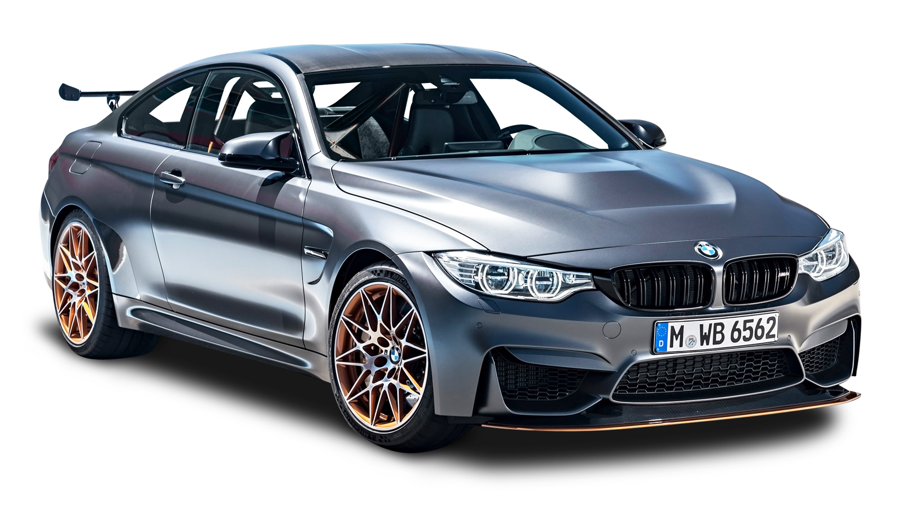

Bayerische Motoren Werke AG
Todos conocemos la marcá de carros bmw ya seá por su bellos modelos o por películas donde salieron, pero nunca te haz preguntado ¿comó se fundo? ¿comó empezaron a producir carros?, aqui te contaremos parte de su historia y algunos modelos más destacados.

¿Qué es bmw?
BMW pronunciación alemana:[be-em-ve] es un fabricante alemán de automóviles y motocicletas de alta gama y lujo, cuya sede se encuentra en Múnich. Sus subsidiarias son Mini, Rolls-Royce, BMW i y BMW Bank.

¿Qué ofrece la marca BMW?
Con sus cuatro marcas, BMW, MINI, Rolls Royce y BMW Motorrad, BMW Group es el principal fabricante del mundo de automóviles y motocicletas premium, y también ofrece servicios financieros y de movilidad premium. Tiene una plantilla de aproximadamente 125.000 empleados en todo el mundo.